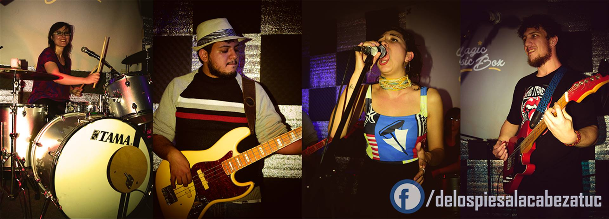

De Los Pies A La Cabeza
Al ritmo del cuerpo
De Los Pies A La Cabeza es una banda de música con fuertes influencias del funk y el rock nacional. Está mezcla de influencias comienza a notarse en temas del estilo de “Bipolar” y “Amanda” en sus tempranos comienzos. En su trayectoria compartió escenarios con grandes bandas nacionales e internacionales de diferentes géneros como Tu Kalavera (Mza) Armando Flores (Cba) Kameleba (San Luis), La Yugular (Jujuy), Eruca Sativa (BsAs), Los Pericos (BsAs), Las Pelotas (BsAs), Nonpalidece (BsAs), La Vela Puerca (Uruguay) y muchas más.-
Actualmente, De Los Pies A La Cabeza, está conformado por Ana Castellano, fundadora y baterista del grupo, Yosef en guitarras y voz, Mario Corronca en Bajo y Ashley Matheus en voz, y es la banda ganadora de la última edición del "Budweiser Made For Music" concurso integrado por un jurado de lujo, con: Joaquín Levinton (ex Turf), Eduardo de la Puente (periodista de FM Rock & Pop y músico), Wallace (cantante de M.A.S.A.C.R.E) y Zeta Bocio (ex Soda Stereo).
De los Pies A La Cabeza, quedo entre las 5 mejores bandas del certamen con una impecable presentación y una favorable devolución del jurado, distinguiendo la puesta en escena y el solido sonido de la banda, para luego ser elegida por la gente para la siguiente gira como teloneros de Vicentico (Ex Fabulosos Cadillacs).